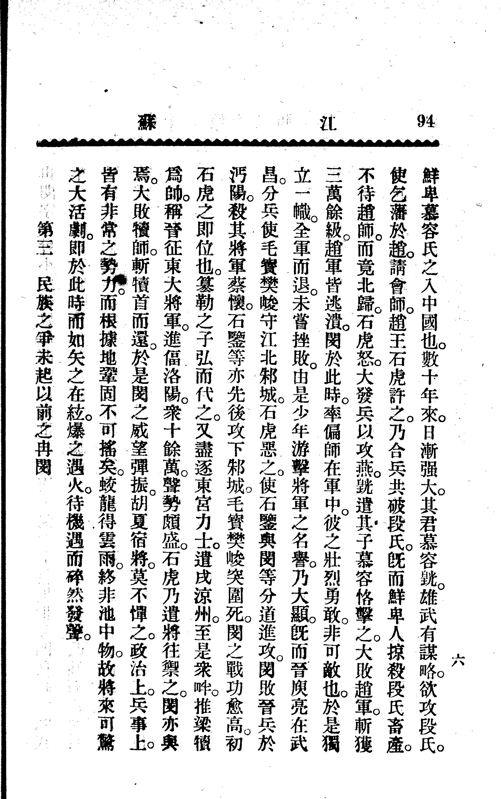

五、“武悼”是不是恶谥
还有一种奇葩说法，说慕容儁给冉闵的谥号“武悼”是恶谥，我建议您还是去看看《谥法研究》吧。
我们把两个字分开，一个一个看，首先是“武”（恶谥我用黄色标出来了）：


除了一个“夸志多穷”其他都是褒义好吗？“武”根本就是一个美谥好吗！用脑子想一想慕容儁给冉闵谥号就是因为畏惧汉族人对冉闵的同情，怎么可能给一个恶谥？
然后看“悼”，哦书里已经标出来了，这是一个中谥：
所以“武悼”是一个美谥一个中谥，总体仍是美谥，根本没有恶谥一说。
六、将冉闵视为民族英雄是不是网络皇汉的发明
冉闵受到不少皇汉的支持，很多人反对冉闵，其实是反对皇汉。很多人对冉闵嗤之以鼻：哼，都是那帮网上的皇汉吹出来的，皇汉还是多读点书认点字吧！
然而事实是……将冉闵视为民族英雄可以追溯到晚清民国时期。
1.1904年《江苏》第十一十二合期：《中国民族主义大豪杰冉闵传》
1904年《江苏》杂志第十一、十二合期一篇署名“荆驼”的文章《中国民族主义大豪杰冉闵传》将冉闵评为“震古烁今，扭转乾坤”的“中国民族主义大豪杰”，连高中历史题上都引用了。


